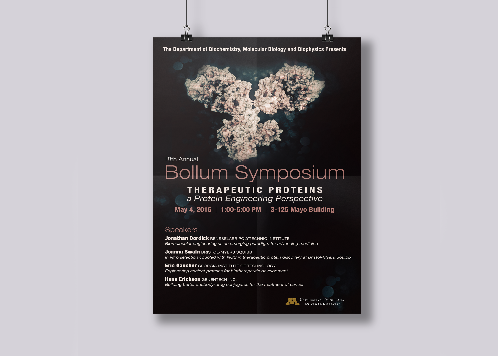

PREV
NEXT
BOLLUM SYMPOSIUM POSTER
Promotional poster designed to promote the BioTechnology Institute's Bollum Symposium.
Job done as the Graphic Design Intern for the BioTechnology Institute at the University of Minnesota.

BACK TO TOP
BACK TO TOP
Website design and development © Jenna Privatsky 2017